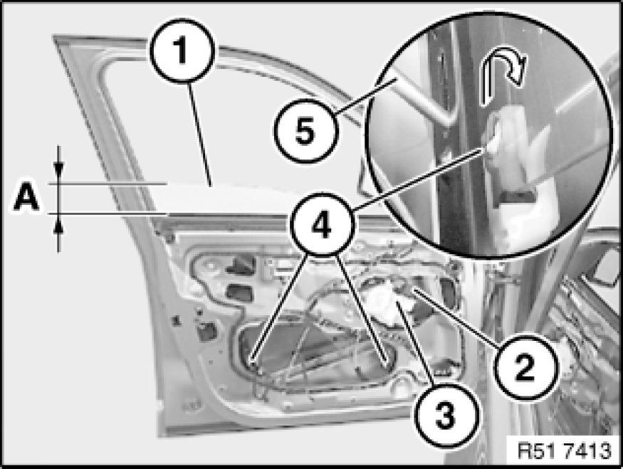
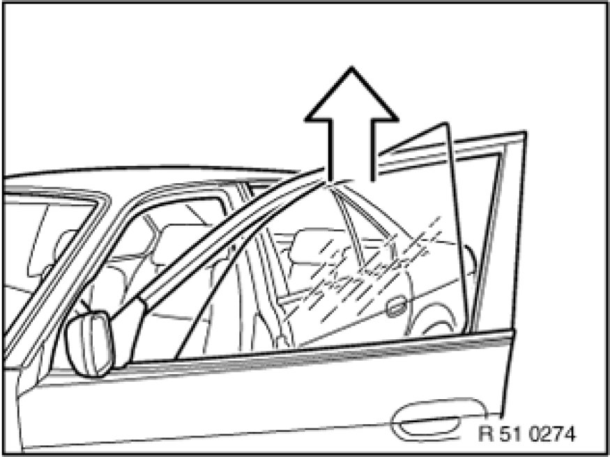

Front Door Window Glass: Service and Repair
51 32 170 - Removing and installing / replacing door window glass, front left or right

Necessary preliminary tasks:
- Open door window to 105 mm.
- Remove sound insulation in front door Removing and Installing/Replacing Sound Insulation in Left or Right Front Door
- Remove outer window cavity cover strip Removing and Installing/Replacing Window Cavity Cover Strip on Outside of Left or Right Front Door

Door window glass (1) must be opened to dimension (A).
A = - approx. 105 mm
Important!
Disconnect plug connection (2) from power window motor (3) (risk of trapping).
Lever out catches (4) with screwdriver (5) in direction of arrow.
Installation:
Catch (4) must be correctly clipped into place.
Carry out function check on power window unit and anti-trapping protection.
If necessary, normalize 67 62 000 - Removing and installing / replacing flat motor for front left or right power window unit power window unit.

Installation:
Following parts of window guide (3) must not be damaged or missing:
1 - Catch
2 - Buffer stop

Turn door window glass and lift out towards rear/top.